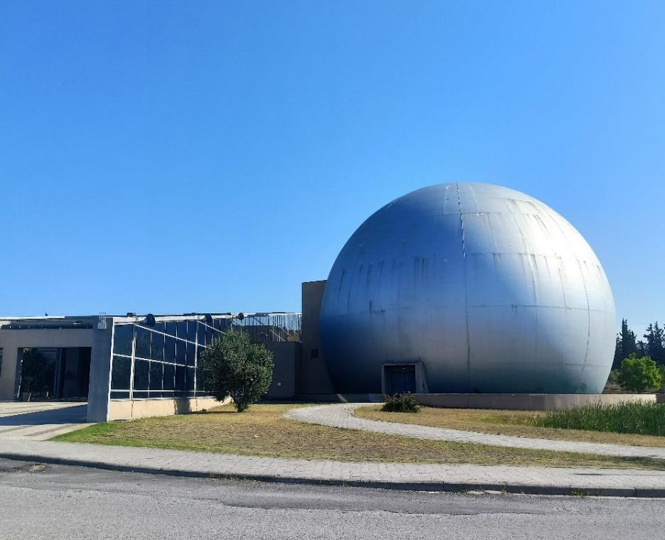

NOESIS: Science Communication Internship
A two-month placement at NOESIS, the Science Center and Museum of Technology in Thessaloniki. I supported school programmes and explained interactive exhibits to visitors and families.
Alongside research, I enjoy helping people take part in science themselves: through hands-on activities, museum exhibits, guided explanations and the night sky. This page collects the outreach work I have done so far.

A two-month placement at NOESIS, the Science Center and Museum of Technology in Thessaloniki. I supported school programmes and explained interactive exhibits to visitors and families.

How I used an ordinary lens to turn my room into a microscope.
Guiding night hikes and talking about the night sky.
PLACEHOLDER – material and permission to publish needed
More to come: workshops, observatory tours, talks and science-media work will be added here.
Invite me for an outreach activity